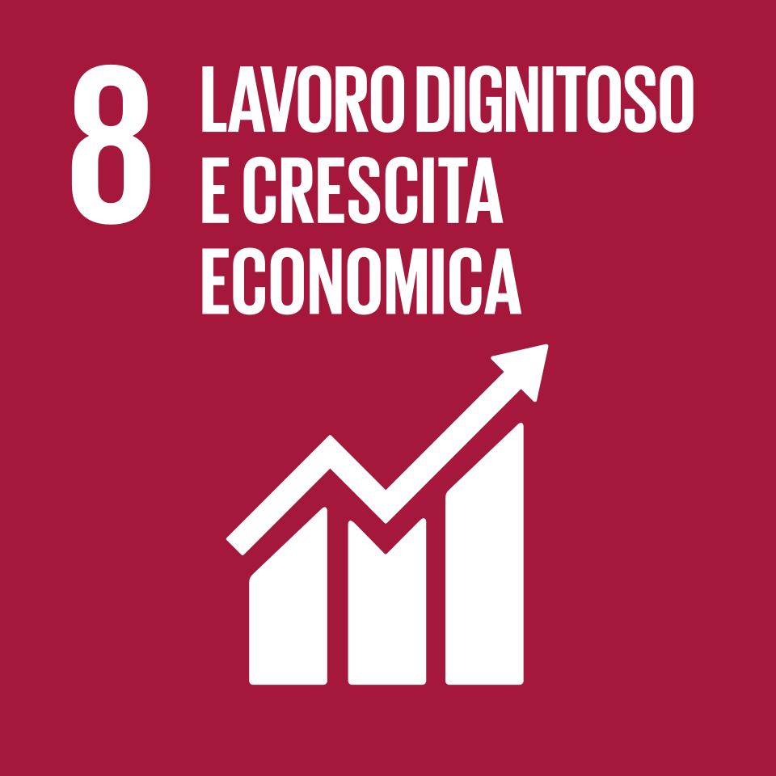

8
Garantire una crescita economica duratura e un lavoro dignitoso per tutti, proteggendo i diritti dei lavoratori e ponendo fine al lavoro forzato e minorile.
L’Obiettivo 8 dell’Agenda 2030 per lo Sviluppo Sostenibile si propone di incentivare una crescita economica duratura,
inclusiva e sostenibile, un’occupazione piena e produttiva ed un lavoro dignitoso per tutti.
Una crescita economica sostenibile da tutti i punti di vista richiede alla società di creare condizioni
che permettano alle persone di avere posti di lavoro dignitosi e tutelati, che stimolino le economie,
sostengono l’innovazione e la sua diffusione e al tempo stesso non danneggiano l’ambiente.

Secondo la definizione dell'Organizzazione Internazionale del Lavoro (OIL) si tratta di un'occupazione che assicura condizioni di:
Libertà ed equità: Opportunità di lavoro scelte liberamente e parità di trattamento.
Sicurezza e Protezione Sociale: Ambienti di lavoro sicuri che tutelano la salute fisica e mentale, oltre a coperture assicurative e pensionistiche.
Dignità umana: Rispetto dei diritti dei lavoratori e possibilità di esprimere le proprie opinioni.
Occupazione Produttiva e Redditizia: Garantisce un salario in grado di soddisfare le necessità di base (cibo, casa, salute, educazione) del lavoratore e della sua famiglia.
L'SDG 8 si suddivide in 12 target da raggiungere entro il 2030
Sostenere la crescita del reddito per persona, puntando a un aumento del PIL di almeno il 7% annuo nei paesi in via di sviluppo.
Raggiungere standard più alti di efficienza economica puntando su innovazione, tecnologia e settori che richiedono molta manodopera.
Promuovere politiche che favoriscano la nascita di posti di lavoro dignitosi e la crescita delle piccole e medie imprese, facilitando l'accesso ai prestiti.
Migliorare l'efficienza nell'uso delle risorse per far sì che la crescita economica non avvenga a spese della tutela ambientale.
Garantire entro il 2030 un lavoro dignitoso per tutti, inclusi giovani e persone con disabilità, assicurando uguale paga per un lavoro di uguale valore.
Ridurre sensibilmente la quota di giovani che non sono inseriti in percorsi di studio, formazione o lavoro.
Eliminare il lavoro forzato, la tratta di esseri umani e ogni forma di lavoro minorile, con l'obiettivo di fermare quest'ultimo entro il 2025.
Proteggere i diritti sindacali e promuovere un ambiente di lavoro sicuro per tutti, con particolare attenzione ai migranti e a chi ha contratti precari.
Promuovere un turismo sostenibile che generi occupazione e valorizzi la cultura e i prodotti del territorio.
Rafforzare le banche e gli istituti nazionali per permettere a chiunque di accedere a conti correnti, assicurazioni e servizi finanziari.
Aumentare il sostegno tecnico e commerciale per i paesi in via di sviluppo affinché possano partecipare meglio ai mercati internazionali.
Rendere operativa una strategia globale per il lavoro giovanile seguendo le linee guida dell'Organizzazione Internazionale del Lavoro.